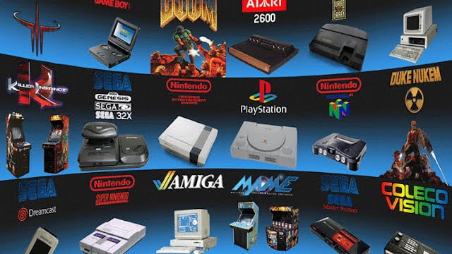

Emuladores
¿Qué es un emulador?
Técnicamente, un emulador es un software, que permite ejecutar programas o videojuegos en una plataforma (sea una arquitectura de hardware o un sistema operativo) diferente de aquella para la cual fueron escritos originalmente: ya sea un pc windows, un android, consolas como psp, ps3, nintendo switch... etc; Por lo que podemos jugar a nuestras consolas retro favoritas ejecutando un programa que la emule, y los juegos físicos son substituidos por unos archivos de ordenador que se llaman ROMS.
Hay mucha controversia en el tema de las ROMS ya que son archivos de imagen de juegos originales que están protegidos por copyright aún a día de hoy por las compañías, lo que ha llevado al cierre de webs de distribución de ROMS últimanente.

En esta web pondremos a su alcance algunos de los emuladores de las consolas mas famosas y clásicas y también sus juegos mas populares, para que tenga a su disposición, aquel que quiera disfrutar y recordar los viejos tiempos, le regalamos un poco de nostalgia.!